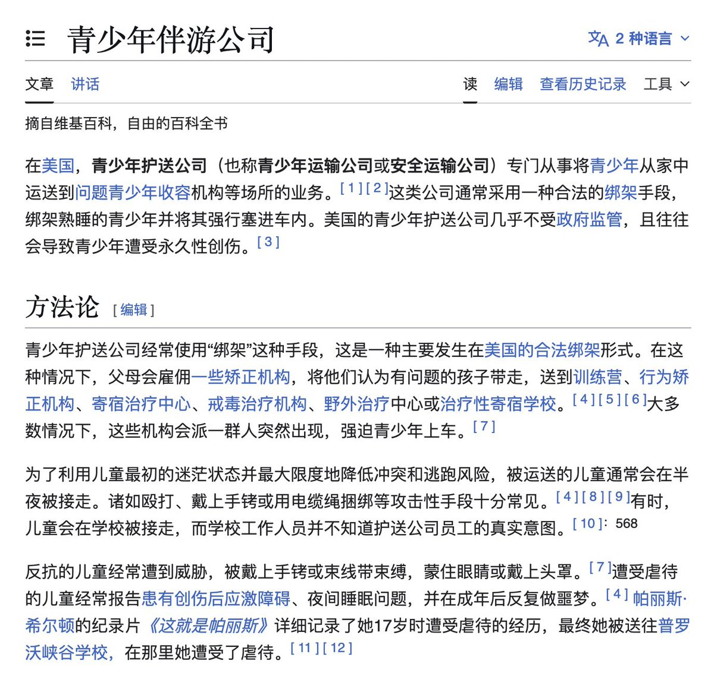
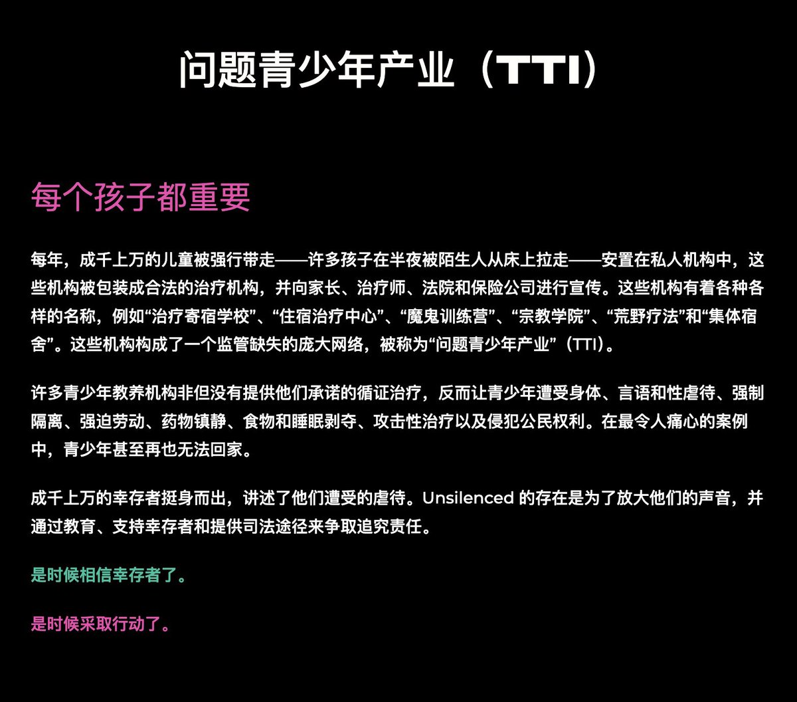

所以我之前那个号就写过，扭转学校这个模式本身就是从美国发源的，国内的扭转/戒网瘾学校体系的主流模式直接继承了美国的「问题青少年产业（Troubled Teens Industry）」，有着极其相似的宣传、绑架、虐待手段。美国和加拿大的这类机构都已经形成了完整的产业链，至少已经导致400人死亡，至今仍然未受到有效监管；而反对这类机构的志愿者组织目前仍然极其稀缺，像加拿大甚至完全缺乏相关的统计数据。不得不说虐待儿童真的是当代父权家庭和资本主义的基石。




仅就少年法庭干预不服管教子女这方面操作上展现的景象可以有很大差异，对叛逆富家子弟可以是专业青少年心理学家诊断原因，社工协调父母关系，甚至提供庇护康复环境，整个青春期和解电影;对穷人就是改正警告+蔑视法庭+少年犯三连，最好的情况是《超脱》，哈人点的就是《上帝之城》了 https://t.co/k2VVYZyMpg